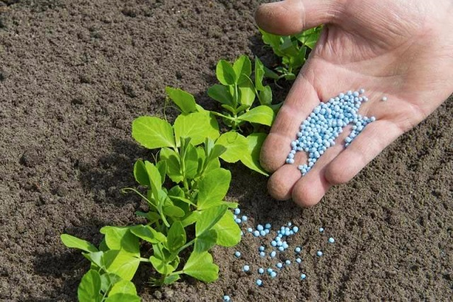
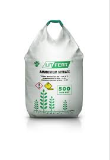

NITROGENOUS FERTILIZERS
 
Nitrogenous Fertilizers. The nitrogenous fertilizer industry includes the production of synthetic ammonia, nitric acid, ammonium nitrate, and urea.
Synthetic ammonia and nitric acid are used primarily as intermediates
in the production of ammonium nitrate and urea fertilizers
What it does?
What it does?
Nitrogen is absorbed by the plant roots in two forms: nitrate form (NO3) and ammonical form (NH4). Most of the crop plants prefer nitrogen in nitrate form; but paddy and few other higher plants prefer nitrogen in ammonical form. Ammonical form of nitrogen is however, easily covertible into nitrate form. Most of the fertilizers contain nitrogen in these two available forms. Urea, however, contains nitrogen in amide form but this form of nitrogen is swiftly converted by soil micro-organisms into ammonical form and then into nitrate form. Based on the forms of nitrogen they contain, nitrogenous fertilizers are classified into following four categories, viz. (1) nitrate fertilizers, (2) ammonical fertilizers, (3) ammonical-nitrate fertilizers, and (4) amide fertilizers.
TYPES OF NITROGENOUS FERTILIZERS
- ammonia liquor
- ammonium nitrate
- ammonium sulfate
- anhydrous ammonia
- aqua ammonia
- fertilizers, mixed, produced in nitrogenous fertilizer plants
- fertilizers, natural
- nitric acid
- nitrogen fertilizer solutions
- plant foods, mixed in nitrogenous fertilizer plants
- urea.
Management of Nitrogenous Fertilizers
- Nearly all the nitrogenous fertilizers are highly amenable to losses and most of the crops required nitrogen during their entire growth duration, application in splits is necessary to ensure maximum utilization of fertilizer by crop plants.
- A greater number of splits may be given for perennial as well as long-duration crops.
- For rice cultivars of medium duration, nitrogen-based fertilizers should be applied in three splits, first as basal dose, second at maximum tillering stage, and third at panicle initiation stage.